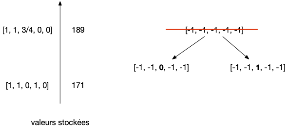
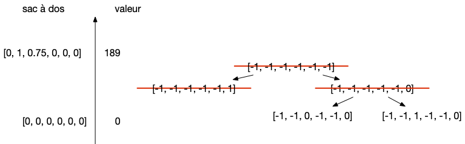
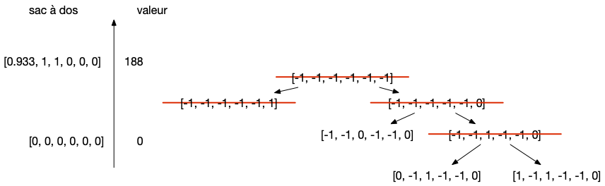
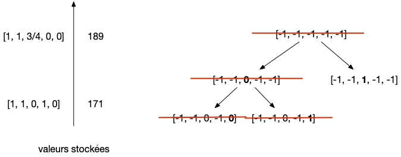
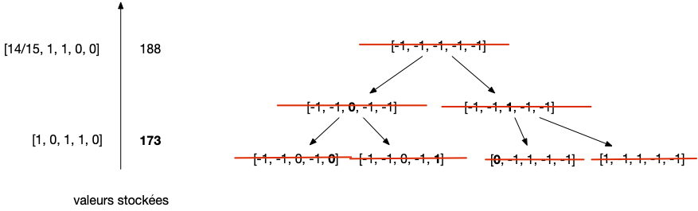

Étude
Le problème du sac à dos est un problème fondamental en algorithmie, nombre de problèmes courant pouvant se modéliser sous cette forme.
Sac à dos fractionnel
Commençons par une version simplifiée du problème, dit du sac à dos fractionnel :
Problème
On possède $n$ poudres différentes (ou liquide, ou tout autre produit pouvant être fractionné), chaque poudre $i$ étant décrite par :
- sa quantité disponible en kilo : $k_i$
- son prix au kilo : $p_i$
On dispose d'un sac pouvant contenir $K$ kilos de poudre et on cherche une répartition de poudre permettant de maximiser la valeur du sac.
Par exemple, on a un sac à dos de 20kg et six poudres de paramètres :
- poudre 1 : 15kg et un prix de 9€ le kilo
- poudre 2 : 2kg et un prix de 15€ le kilo
- poudre 3 : 4kg et un prix de 8€ le kilo
- poudre 4 : 1kg et un prix de 6€ le kilo
- poudre 5 : 6kg et un prix de 3€ le kilo
- poudre 6 : 80kg et un prix de 10€ le kilo
Le sac peut contenir soit :
- 20kg de la poudre 6, pour un profit de 200€,
- 14kg de la poudre 1 et 6kg de la poudre 5, pour un profit de 114€,
- 1kg de la poudre 1 à 5 et le reste (15kg) en poudre 6, pour un profit de 192€,
- ...
Algorithme glouton
Le problème du sac à dos fractionnel peut se résoudre par un algorithme glouton : à chaque étape on ajoute une poudre et on essaie d'en mettre le plus possible. Comme on veut maximiser le profit, on trie les poudres par prix au kilo décroissant.
On obtient donc in fine l'algorithme suivant, écrit en python :
def sac_a_dos_fractionel(produits, masse_totale):
produits.sort(key=lambda x: -x[0])
sac_a_dos = []
for i in range(len(produits)):
prix, kilo, nom = produits[i]
if masse_total >= kilo:
sac_a_dos.append((nom, 1))
masse_totale -= kilo
else:
sac_a_dos.append((nom, masse_totale / kilo))
masse_totale = 0
return sac_a_dos
- entrée : liste de produits, chaque produit étant une liste [prix au kilo, kg, nom]
- sortie : liste de produits [nom, fracrion] où nom est le nom du produit dans la liste d'entrée et fraction, la fraction de poudre pris (strictement plus grand que 0 et inférieure ou égal à 1).
On trie la liste dans le code. Comme le 1er élément de chaque liste est le prix au kilo, le résultat sera une liste de produit trié par prix au kilo croissante. On la retourne (avec la méthode reverse()) pour avoir les produit triés par prix au kilo décroissant.
La complexité de cet algorithme est déterminée par le tri, puisque l'intérieure de la boucle for est en temps constant.
- Astuce du tri : lorsque l'on trie une liste de liste, python utilise l'ordre lexicographique. Cela permet ici de trier sur les prix volumique tout en conservant l'indice du tableau d'origine (le deuxième élément de la liste n'intervient dans le tri que si les 2 premiers éléments sont identique, ce qui ne change pas le tri par prix volumique)
- attention, les méthodes de liste
sortetreversene rendent rien. Elles modifient la liste. De làl.sort().reverse()ne fonctionne pas puisque cette commande signifie que l'on applique la méthodereverseà l'objet donné en retour del.sort(). Or commel.sort()ne rend rien elle retourne l'objetNone(l'objet rien du tout en python) qui ne possède pas de méthodereverse. C'est ce que dit le message d'erreur quand on essaie de le faire :AttributeError: 'NoneType' object has no attribute 'reverse'(le type de l'objetNone(comme le tpe des entier estintou le type des réels estfloat) estNoneType(il a un type à lui)).
En reprenant l'exemple, l'algorithme rend comme composition du sac à dos :
- les 2kg de la poudre 2
- 18kg de la poudre 6
Pour un profit de 208€
Preuve d'optimalité
Cet algorithme glouton est même optimal !
On peut remarquer que l'algorithme glouton prend toujours tout le produit disponible jusqu'au dernier choix où il ne prend qu'une fraction de celui-ci (la place restante) pour finir de remplir le sac-à-dos .
Pour notre solution, on note $(k_0, k_1, \dots, k_n)$ les kilos choisis dans l'ordre de choix de l'algorithme glouton.
On suppose que notre solution n'est pas optimale et, parmi toutes les solutions optimales possible, on en prend une qui correspond le plus longtemps possible avec la solution rendue par l'algorithme. Soit alors $0 \leq i <n$ le plus petit indice telle que la solution optimale et celle rendue par l'algorithme est différente. La solution optimale est alors $(k_0, \dots, k_{i-1}, k'_i, \dots, k'_n)$.
On peut enfin, sans perte de généralité, choisir la solution optimale ayant $k_i'$ le plus grand possible parmi toutes les solutions optimales coïncidant avec la solution de l'algorithme glouton jusqu'à $k_{i-1}$.
Jusqu'à l'étape $i-1$ tous les choix sont identiques donc une fois placés les $i$ premiers produits (les produits d'indices $0$ à $i-1$) avec le même kilo, il reste la même place dans le sac-à-dos et pour notre algorithme et pour la solution optimale. De là, par construction de l'algorithme glouton (on prend à chaque choix soit tout le produit soit juste assez pour finir de remplir tout le sac) les kilos $k'_i$ de la solution optimale pour le produit d'indice $i$ est forcément plus petit strictement que $k_i$.
Donc :
- soit $k'_j = 0$ pour tout $j > i$ et notre solution est meilleure que la solution optimale, ce qui est impossible par hypothèse,
- soit il existe $k'_j >0$ pour un $j>i$. On peut alors diminuer d'un kilo $k_j'$ pour augmenter d'un kilo $k_i'$ et obtenir une solution strictement meilleure que la solution optimale : c'est impossible.
Notre hypothèse arrivant à une contradiction, elle était fausse : la solution de l'algorithme glouton est optimale.
Problème du sac à dos
Le fait de pouvoir fractionner les éléments est un cas particulier heureux, mais ce n'est pas la norme, pensez à un déménagement : les déménageurs ne peuvent prendre qu'un bout du canapé sous prétexte qu'il ne rentre pas en entier dans le camion... La formalisation classique du sac à dos ne permet pas de scinder des objets :
Problème
On possède $n$ aliments (de 1 à $n$), chacun décrit par :
- sa quantité nutritive : $p_i$ ($1 \leq i \leq n$)
- sa masse en kilo : $k_i$ ($1 \leq i \leq n$)
On dispose d'un sac pouvant contenir $K$ kilos et on cherche à maximiser la quantité nutritive emmenée.
Ce problème se décline de plein de façons pratique :
- en remplaçant la masse par le volume on peut remplir un camion de déménagement au maximum théorique
- mais aussi le stockage de fichiers (les aliments) sur un disque dur (le sac à dos) de capacité limité (la quantité nutritive est la taille de chaque fichier)
- ou encore maximiser la charge d'un générateur
- ...
Comme on ne peut pas découper les aliments au contraire du sac à dos fractionnel, on a le résultat suivant :
Proposition
La solution optimale d'un problème du sac à dos est inférieure à la solution optimale des mêmes données appliquée au problème du sac à dos fractionnel
preuve
preuve
La solution optimale du problème du sac à dos est une solution admissible au problème du sac à dos fractionnel, son optimum est donc nécessairement plus grand.
Algorithme glouton
Comme les solutions du sac à dos sont des solutions admissible du sac à dos fractionnel, on peut tenter d'adapter l'algorithme glouton (optimal) précédent au problème du sac à dos :
def sac_a_dos_glouton(aliments, masse_totale):
aliments.sort(key=lambda x: -x[0] / x[1])
sac_a_dos = []
for i in range(len(aliments)):
p, k, nom = aliments[i]
if masse_total >= k:
sac_a_dos.append(nom)
masse_totale -= k
return sac_a_dos
- entrée : liste d'aliments, chaque aliment étant une liste [prix, kg, nom]
- sortie : liste de noms d'aliments choisis pour être dans le sac à dos
On a ici trié les aliment par valeur nutritive par kilo décroissante.
Reprenons l'exemple et modifions le pour que l'on ne puisse pas prendre une fraction de poudre :
- poudre 1 : 15kg et un prix de 135€ (9€ le kilo)
- poudre 2 : 2kg et un prix de 30€ (15€ le kilo)
- poudre 3 : 4kg et un prix de 32€ (8€ le kilo)
- poudre 4 : 1kg et un prix de 6€ (6€ le kilo)
- poudre 5 : 6kg et un prix de 18€ (3€ le kilo)
- poudre 6 : 80kg et un prix de 800€ (10€ le kilo). On supprime cet aliment puisqu'il ne rentre pas dans le sac.
En maximisant le profit, l'algorithme glouton préconise de prendre les poudres 1, 2 et 4 pour un profit de 171€. On se rend cependant compte que cette solution n'est plus maximale ! En effet prendre les poudres 1, 3 et 4 rapporte un profit de 173€.
On peut même montrer que l'algorithme glouton ne possède pas de garantie :
Montrer que pour 2 aliments seulement, le rapport entre la solution optimale et la solution de l'algorithme glouton peut-être aussi grand que l'on veut.
corrigé
corrigé
Si l'on prend les aliments :
- aliment 1 : de valeur nutritive 2 et de poids 1,
- aliment 2 : de valeur nutritive K et de poids K, qui correspond à la masse totale que peut contenir le sac à dos.
Le glouton privilégiera toujours l'aliment 1 alors que c'est l'aliment 2 qu'il faut choisir. Comme on peut faire grossir la capacité du sac, le rapport entre la valeur optimale et celle donnée par le glouton peut être aussi grand que l'on veut.
On peu alors vouloir modifier l'algorithme glouton pour considérer la valeur nutritive totale et pas celle au kilo (on trouve alors l'optimum pour l'exemple) mais ce n'est pas non plus super :
Montrer que le rapport entre la solution optimale et la solution de l'algorithme glouton modifiée peut-être aussi grand que l'on veut.
corrigé
corrigé
Si l'on prend $K+1$ aliments :
- aliment 1 : de valeur nutritive 2 et de poids $K$, qui correspond à la masse totale que peut contenir le sac à dos.
- aliment 2 à $K+1$ : de valeur nutritive 1 et de poids 1
Le glouton privilégiera toujours l'aliment 1 alors que c'est les aliments 2 à $K+1$ qu'il faut choisir. Comme on peut faire grossir la capacité du sac, le rapport entre la valeur optimale et celle donnée par le glouton peut être aussi grand que l'on veut.
Tout n'est cependant pas perdu car on peut modifier l'algorithme glouton pour qu'il soit à performance garantie.
Algorithme à performance garantie
Lors de l'exécution de l'algorithme glouton, soit $i^\star$ la première étape telle que l'aliment ne peut pas être ajouté dans le sac. On a alors :
- $\sum_{i < i^\star} k_i \leq K$
- $\sum_{i < i^\star} k_i + k_{i^\star} > K$
- la solution du sac à dos fractionnel associé est : $\sum_{i < i^\star} p_i + (\frac{K-\sum_{i < i^\star} k_i}{k_{i^\star}}) \cdot p_{i^\star}$
Des constatations ci-dessus on peut alors constituer l'algorithme suivant (en supposant sans perte de généralité que $k_i \leq K$ pour tout $i$ donc que tous les aliments rentrent dans le sac) :
- on trie tous les aliments par valeur nutritionnelle au kilo décroissante
- on note $i^\star$ le premier élément dans cet ordre tel que $\sum_{i \leq i^\star} k_i > K$
- l'algorithme rend $\max(\sum_{i < i^\star} p_i, p_{i^\star})$.
Cette simple modification permet de garantir la solution obtenue :
En utilisant le fait que $a + b \leq 2\cdot \max(a, b)$, montrer la la solution de l'algorithme ne peut pas être moins que 2 fois moins bonne que la solution optimale.
solution
solution
On sait que la solution optimale (notée $\text{OPT}$ est :
- plus grande que la solution trouvée par notre algorithme (notée $\text{SOL}$)
- plus petite que $\sum_{i < i^\star} p_i + p_{i^\star}$
Comme $\sum_{i < i^\star} p_i + p_{i^\star} \leq 2 \cdot \max(\sum_{i < i^\star} p_i, \sum_{i < i^\star} p_i)$ et que l'algorithme rend $\max(\sum_{i < i^\star} p_i, \sum_{i < i^\star} p_i)$, on a :
$$
\frac{1}{2}\cdot \text{OPT} \leq \text{SOL} \leq \text{OPT}
$$
Solution par énumération
Pour trouver la solution maximale à un problème d'optimisation, on peut toujours énumérer toutes les solutions. Dans le cas d'un sac à dos cela revient à énumérer tous les sous ensembles de l'ensemble des produits et de prendre celui qui maximise le sac à dos. Pour aider à l'énumération, formalisons le problème du sac à dos sous la forme d'un problème d'optimisation linéaire en nombre entier :
Problème du sac à dos sous la forme d'un problème de programmation linéaire
- Les données sont :
- les qualités nutritives $p_i$ ($1\leq i \leq n$)
- les poids des aliments $k_i$ ($1\leq i \leq n$)
- la contenance en kilo $K$ du sac à dos
- les variables du problème sont constituées de $n$ variables $x_i$ ($1\leq i \leq n$)
- le but est de maximiser la fonction objectif : $\sum_{1\leq i \leq n}x_i\cdot p_i$
- sous les contraintes :
- $x_i \in \{0, 1\}$ pour tout $1\leq i \leq n$
- $\sum_{1\leq i \leq n}x_i\cdot k_i \leq K$
Énumération exhaustive
Énumérer toutes les solutions possibles du sac à dos revient à choisir pour chaque $x_i$ s'il vaut 0 ou 1 puis de vérifier pour cette affectation :
- si elle est réalisable, c'est à dire que les aliments choisis tiennent tous dans le sac à dos
- si la fonction objectif est maximale par rapport aux affectations déjà faite
Pour minimiser le temps pris pour faire cet algorithme il faut s'assurer de ne pas refaire une affectation déjà faite. On peut pour cela reprendre l'algorithme successeur qui permet de trouver le successeur d'un nombre écrit sous sa forme binaire.
L'algorithme peut alors être :
affectation = [0] * n
affectation_max = list(affectation)
objectif_max = 0
while affectation != [1] * n:
successeur(affectation)
if sum(x * y for x, y in zip(affectation, poids)) <= K:
objectif_courant = sum(x * y for x, y in zip(affectation, qualités_nutritives))
if objectif_courant > objectif_max:
objectif_max = objectif_courant
affectation_max = list(affectation)
Si vous faites affectation_max = affectation plutôt que affectation_max = list(affectation) vous ne stockerez pas l'affectation maximale, vous donnerez juste un nouveau nom à la liste affectation ce qui est problématique puisque successeur la modifie.
On a utilisé la fonction zip de python qu'il est très utile de connaitre.
La complexité de l'algorithme est la somme de :
- la complexité totale de tous les appels à
successeuret que l'on a déterminé (à de multiple reprise) dans la partie consacrée à la complexité amortie étant égale à $\mathcal{O}(2^n)$ - la complexité du calcul de la fonction objectif et de l'admissibilité ($\mathcal{O}(n)$ pour les 2 calculs) pour chaque affectation (il y en a $\mathcal{O}(n)$) : $\mathcal{O}(n \cdot 2^n)$
- le stockage de l'affectation ($\mathcal{O}(n)$) possiblement pour chaque affectation (il y en a $\mathcal{O}(n)$) : $\mathcal{O}(n \cdot 2^n)$
On obtient une complexité totale de $\mathcal{O}(n \cdot 2^n)$. La complexité est exponentielle, mais c'est du au fait qu'il y a beaucoup de cas à voir. L'analyse d'une affectation particulière est simple.
Reprenez l'exemple et donnez la solution optimale par recherche exhaustive.
On a un sac à dos de $K=20$ et 5 aliments :
- poudre 1 : 15kg et un prix de 135€
- poudre 2 : 2kg et un prix de 30€
- poudre 3 : 4kg et un prix de 32€
- poudre 4 : 1kg et un prix de 6€
- poudre 5 : 6kg et un prix de 18€
corrigé
corrigé
Il y a $2^5 = 32$ possibilités et les seules possibilités admissibles maximales sont :
- poudres 1, 2, 4 de valeur 171€
- poudres 1, 3, 4 de valeur 173€
- poudres 2, 3, 4, 5 de valeur 86€
Branch and bound
La méthode du Branch and Bound (ou Séparation et évaluation en Français) est une méthode générale permettant d'accélérer la recherche de l'optimum d'un problème d'optimisation par recherche exhaustive si l'on peut trouver facilement une borne supérieure à un sous-problème où certaines affectation (mais pas toutes) ont déjà été faites.
Cette méthode est particulièrement bien adaptée au problème du sac à dos.
Bornes supérieure et inférieure
On peut toujours considérer un problème de sac à dos comme un problème de sac à dos fractionnel que l'on peut facilement résoudre. Comme les solutions d'un sac à dos sont contenus dans les solution d'un sac à dos fractionnel (on prend pour chaque aliment soit tout soit rien) on peut :
- majorer la solution du sac à dos par la valeur optimale du sac à dos fractionnel,
- si la solution du sac à dos fractionnel est aussi une solution du sac à dos alors c'est aussi la solution optimale du sac à dos.
Si l'on reprend l'exemple en supprimant la poudre 6 qui ne rentre pas en entier dans le sac, on obtient une solution du sac à dos fractionnel valant :
- 15kg de poudre 1 (l'entièreté)
- 2kg de poudre 2 (l'entièreté)
- 3/4 de la poudre 3
Pour un profit de 174€ qui est bien strictement plus grand que le profit max du sac à dos (qui vaut 173€). Remarquez que l'on ne peut pas déduire la solution entière à partir de la solution fractionnelle : elle contient la poudre 2 qui n'est pas dans la solution optimale.
Borne supérieure
Une borne supérieure à un problème du sac à dos peut être trouvé en relâchant la contrainte d'intégrité des variables et de considérer le problème comme un sac à dos fractionnel.
La valeur optimale du sac à dos fractionnel associé est appelée borne supérieure du problème du sac à dos.
On peut de la même manière associer une borne minimum à un problème du sac à dos puisqu'il suffit d'utiliser le glouton !
Borne inférieure
Une borne inférieure à un problème du sac à dos peut être trouvé en utilisant l'algorithme glouton précédent.
La valeur donnée par l'algorithme glouton est appelée borne inférieure du problème du sac à dos.
On pourrait bien sur choisir d'autres bornes, mais l'intérêt de prendre les valeurs des 2 algorithmes gloutons est que leurs complexité est faible. D'autant plus qu'ils dépendent tous 2 du même ordre que l'on peut calculer une fois pour toute et réutiliser pour tous les sous-problèmes.
Sous-problème
Si on fixe une variable pour un problème du sac à dos, on se ramène à un sac à dos plus petit :
Sous-problème
Soient $p_i$ ($1\leq i \leq n$), $k_i$ ($1\leq i \leq n$) et $K$ les données d'un sac à dos à $n$ variables $x_i$ ($1\leq i \leq n$).
Si l'on fixe $x_1$ à :
- $x_1= 0$, alors cela revient à résoudre un sac à dos à $n-1$ variables de données $p_i$ ($2\leq i \leq n$), $k_i$ ($2\leq i \leq n$) et une contenance de $K$
- $x_1= 1$, alors cela revient à résoudre un sac à dos à $n-1$ variables de données $p_i$ ($2\leq i \leq n$), $k_i$ ($2\leq i \leq n$) et une contenance de $K-p_1$
On a choisi de fixer $x_1$, mais il est évident à une renumérotation prêt, que l'on peut fixer n'importe quelle variable.
On peut ainsi fixer n'importe quel sous-ensemble de variables et toujours avoir à résoudre un problème de sac à dos.
Définition
Soient $p_i$ ($1\leq i \leq n$), $k_i$ ($1\leq i \leq n$) et $K$ les données d'un sac à dos à $n$ variables $x_i$ ($1\leq i \leq n$).
Une solution ouverte est une suite $y_i$ ($1\leq i \leq n$) telle que :
- $y_i$ ne peut prendre que 3 valeurs -1, 0 ou 1
- $\sum_{i \in I} y_i \cdot k_i \leq K$ avec $I$ l'ensemble des indices $i$ tels que $y_i \neq -1$
Une solution ouverte permet de définir un sous-problème associé où l'on les variables $x_i$ sont fixées à $y_i$ si $y_i \neq -1$.
Une solution ouverte possède encore des inconnues que l'on peut fixer et possède une borne supérieure et inférieure.
Déroulement de l'algorithme
L'algorithme du Branch and bound est alors très simple. Le principe est le suivant : on ne va explorer de solutions ouvertes que si cela peut apporter quelque chose.
On initialise l'algorithme en utilisant la solution ouverte où tous les $y_i$ valent -1 et on calcule :
- sa borne inférieure avec l'algorithme glouton et on stocke sa valeur ainsi que le sac à dos qui le réalise
- sa borne supérieure avec le sac à dos fractionnel et on stocke sa valeur ainsi que le sac à dos fractionnel qui le réalise
Si par chance le résultat du sac à dos fractionnel est entier on peut s'arrêter puisque c'est la solution. Sinon on choisit la première variable de la solution fractionnelle qui ne correspond pas à un sac à dos (on a pris qu'une fraction strictement positive) et on ajoute les solutions ouvertes où l'on fixe cette valeur à 0 et à 1 à un ensemble de solutions ouvertes possibles.
Ceci permet d'initier l'algorithme qui considère itérativement une solution ouverte de l'ensemble des solutions ouvertes possibles et on calcule sa borne supérieure avec le sac à dos fractionnel :
- si sa valeur est inférieure ou égale à la borne inférieure stockée, cette solution ouverte est inutile.
- Si le résultat est entier, on compare sa valeur avec la borne inférieure stockée :
- Si elle est supérieure on a une nouvelle borne inférieure que l'on stocke
- Si elle est inférieure cette solution ouverte est inutile.
- Si le résultat du sac à dos fractionnel n'est pas entier, il faut continuer à explorer les sous-problème de cette solution potentielle. Pour cela :
- on calcule sa borne inférieure et on met à jour la borne inférieure stockée si elle est supérieure
- on choisit la première variable de la solution fractionnelle qui ne correspond pas à un sac à dos (on a pris qu'une fraction strictement positive) et on ajoute les solutions ouvertes où l'on fixe cette valeur à 0 et à 1 à l'ensemble des solutions ouvertes possibles.
On continue de choisir une solution ouverte tant que c'est possible. Une fois cet ensemble vide, la borne inférieure est la solution optimale du sac à dos.
Avant de formaliser tout ça, regardons ce que cela fait sur l'exemple. On a un sac à dos de $K=20$ et 5 aliments :
- poudre 1 : 15kg et un prix de 135€ (9€ le kilo)
- poudre 2 : 2kg et un prix de 30€ (15€ le kilo)
- poudre 3 : 4kg et un prix de 32€ (8€ le kilo)
- poudre 4 : 1kg et un prix de 6€ (6€ le kilo)
- poudre 5 : 6kg et un prix de 18€ (3€ le kilo)
On commence par la solution ouverte $y = [-1, -1, -1, -1, -1]$ elle a comme borne supérieure 189 et comme borne inférieure 171. La borne supérieure est réalisée avec le sac à dos fractionnel $x = [1, 1, 3/4, 0, 0]$ et la borne inférieure avec le sac à dos $x = [1, 1, 0, 1, 0]$.
On a coutume de représenter les différents choix par un arbre. Après cette étape d'initialisation on a :

La première valeur ne correspondant pas à un sac à dos est la troisième puisque $x_3 = 3 < 4 = k_3$. On choisit alors d'ajouter aux solutions possible les solutions ouvertes $[-1, -1, 0, -1, -1]$ et $[-1, -1, 1, -1, -1]$
Après cette étape d'initialisation, on a :
- 2 solutions ouverte possibles : $[-1, -1, 1, -1, -1]$ et $[-1, -1, 0, -1, -1]$
- les bornes minimales et maximales du problème sont 171 et 189,
- la borne minimale est réalisée pour $x = [1, 1, 0, 1, 0]$.
Ce qui donne graphiquement :

On entame maintenant la boucle principale en prenant une solution ouverte de l'ensemble des solutions possibles. Prenons la solution ouverte $[-1, -1, 0, -1, -1]$. Sa borne supérieure vaut 177 et est fractionnelle ($x = [1, 1, 0, 1, 1/3]$). Il faut donc continuer d'explorer :
- sa borne inférieure vaut 171 et ne donc pas d'augmenter la borne inférieure stockée
- on ajoute aux solutions possibles les solutions ouvertes $[-1, -1, 0, -1, 0]$ et $[-1, -1, 0, -1, 1]$.
Après cette étape, on a :
- 3 solutions ouverte possibles : $[-1, -1, 1, -1, -1]$, $[-1, -1, 0, -1, 0]$ et $[-1, -1, 0, -1, 1]$.
- les bornes minimales et maximales du problème sont 171 et 189,
- la borne minimale est réalisée pour $x = [1, 1, 0, 1, 0]$.

On recommence avec une solutions possible, on peut a priori choisir n'importe laquelle : choisissons $[-1, -1, 0, -1, 0]$. Sa borne supérieure est égale à la borne inférieure stockée, cette solution ouverte est donc inutile.

On continue par $[-1, -1, 0, -1, 1]$. Sa borne supérieure vaut 156, cette solution aussi est inutile.

Il ne reste plus qu'une solution ouverte possible $[-1, -1, 1, -1, -1]$ :
- sa borne supérieure vaut 188 et est réalisée pour $x = [14/15, 1, 1, 0, 0]$. On peut remarquer que cette borne supérieure est la nouvelle borne puisque toutes les prochaines solutions possible vont découler de celle-ci.
- sa borne inférieure vaut 86, ce qui est ridicule.
On ajoute les deux solutions ouvertes $[0, -1, 1, -1, -1]$ et $[1, -1, 1, -1, -1]$

La solution suivante, $[0, -1, 1, -1, -1]$, donne une borne supérieure de 86 donc on l'oublie :

Il ne nous reste à nouveau plus qu'une solution ouverte possible $[1, -1, 1, -1, -1]$ de borne supérieure 173 réalisée par $x = [1, 0, 1, 1, 0]$ qui est entier. On ne rajoute donc pas de nouvelles solutions ouvertes puisque toute solution issue de celle ci ne pourrait que moins bonne. De plus on met à jour la borne inférieure stockée pour obtenir :

Il n'y a plus de solutions ouverte possible, l'algorithme s'arrête. L'optimum est réalisé pour la borne inférieure stockée : 173 pour $x = [1, 0, 1, 1, 0]$. On a eu besoin d'explorer uniquement 7 des $2^5 = 32$ possibilité, ce qui est un bon gain.
Algorithme
On suppose que l'on possède deux algorithmes :
fractionnel_possible(ouverte, p, k, K)qui à partir d'une solution ouverte et les données du problème rend le couple(borne_max, solution_max).glouton_possible(ouverte, p, k, K)qui à partir d'une solution ouverte rend le couple(borne_inf, solution_inf).
Pour notre exemple, on aurait ainsi que :
fractionnel_possible([-1, -1, 1, -1, -1], [135, 15, 32, 6, 18], [15, 2, 4, 1, 6], 20)vaudrait(188, [0.933333, 1, 1, 0, 0])glouton_possible([-1, -1, 1, -1, -1], [135, 15, 32, 6, 18], [15, 2, 4, 1, 6], 20)vaudrait(86, [0, 1, 1, 1, 1])
Il nous faut aussi une fonction utilitaire fraction(tableau) qui rend le plus petit indice tel que la valeur du tableau est strictement entre 0 et 1 ou None si un tel indice n'existe pas. Pour notre exemple, on aurait ainsi que :
fraction([1, 0.3, 1, 1, 0])aurait rendu 1fraction([1, 0, 1, 1, 0])aurait renduNone
L'algorithme ci-après est une version simplifiée de l'algorithme puisqu'il ne met pas à jour la borne maximale.
ouverte = [-1] * n
borne_inf, solution_inf = glouton_possible(ouverte, p, k, K)
possibles = []
i = fraction(solution_max)
if i is not None:
ouverte_1 = list(ouverte)
ouverte_1[i] = 1
ouverte_0 = list(ouverte)
ouverte_0[i] = 0
possibles.append(ouverte_1)
possibles.append(ouverte_0)
while possibles:
ouverte = possibles.pop()
possible_borne_max, possible_solution_max = fractionnel_possible(ouverte, p, k, K)
possible_borne_inf, possible_solution_inf = glouton_possible(ouverte, p, k, K)
if possible_borne_max > borne_inf:
if borne_inf < possible_borne_inf:
borne_inf, solution_inf = possible_borne_inf, possible_solution_inf
i = fraction(possible_solution_max)
if i is None:
if borne_inf < possible_borne_max:
borne_inf, solution_inf = possible_borne_max, possible_solution_max
else:
ouverte_1 = list(ouverte)
ouverte_1[i] = 1
ouverte_0 = list(ouverte)
ouverte_0[i] = 0
possibles.append(ouverte_1)
possibles.append(ouverte_0)
Si on a pas de chance, il faut explorer toutes les possibilités, la complexité est donc égale au nombre de solutions possible multiplié par la somme de la complexité des deux algorithmes gloutons. Dans notre cas $\mathcal{o}(2^n \cdot n \log(n))$. Notez que comme les deux algorithmes gloutons dépendent tous du même tri, on peut ne trier qu'une seule fois puis utiliser des algorithmes en $\mathcal{O}(n)$. La complexité totale est alors $\mathcal{O}(n \log(n) + 2^n \cdot n) = \mathcal{O}(2^n \cdot n)$, identique à la complexité de la recherche exhaustive.
Conclusion
L'utilisation du principe du branch and bound est donc profitable au problème du sac à dos puisqu'il n'augmente pas la complexité théorique et esrt en pratique extrêmement efficace.
Solution par programmation dynamique
Les sous problèmes associés au problème du sac à dos sont les même que pour le branch and bond ! En effet, soient $[p_1, \dots, p_n]$, $[k_1, \dots, k_n]$ et $K$ les données d'un problème du sac à dos et $V([p_1, \dots, p_n], [k_1, \dots, k_n], K)$ sa valeur optimale. Alors de deux choses l'une :
- soit la solution optimale contient l'aliment $x_n$ et $V([p_1, \dots, p_n], [k_1, \dots, k_n], K) = V([p_1, \dots, p_{n-1}], [k_1, \dots, k_{n-1}], K-k_n) + p_n$
- soit la solution optimale ne contient pas l'aliment $x_n$ et $V([p_1, \dots, p_n], [k_1, \dots, k_n], K) = V([p_1, \dots, p_{n-1}], [k_1, \dots, k_{n-1}], K)$
La remarque ci-dessus permet de définir, tout comme pour l'alignement de séquences, le terme général $M[i][j]$ d'une matrice à $n$ lignes et $K$ colonnes représentant $V([p_1, \dots, p_i], [k_1, \dots, k_i], j)$ :
Avec comme condition d'initialisation la première ligne :
- $M[1][j] = 0$ si $j < k_1$
- $M[1][j] = p_1$ si $j \geq k_1$
Reprenez l'exemple et donnez la matrice associée.
On a un sac à dos de $K=20$ et 5 aliments :
- poudre 1 : 15kg et un prix de 135€
- poudre 2 : 2kg et un prix de 30€
- poudre 3 : 4kg et un prix de 32€
- poudre 4 : 1kg et un prix de 6€
- poudre 5 : 6kg et un prix de 18€
corrigé
corrigé
Il faut créer une matrice à 5 lignes et 20 colonnes :
| 1 | 2 | 3 | 4 | 5 | 6 | 7 | 8 | 9 | 10 | 11 | 12 | 13 | 14 | 15 | 16 | 17 | 18 | 19 | 20 | |
|---|---|---|---|---|---|---|---|---|---|---|---|---|---|---|---|---|---|---|---|---|
| 1 | 0 | 0 | 0 | 0 | 0 | 0 | 0 | 0 | 0 | 0 | 0 | 0 | 0 | 0 | 135 | 135 | 135 | 135 | 135 | 135 |
| 2 | 0 | 30 | 30 | 30 | 30 | 30 | 30 | 30 | 30 | 30 | 30 | 30 | 30 | 30 | 135 | 135 | 165 | 165 | 165 | 165 |
| 3 | 0 | 30 | 30 | 32 | 32 | 62 | 62 | 62 | 62 | 62 | 62 | 62 | 62 | 62 | 135 | 135 | 165 | 165 | 167 | 167 |
| 4 | 6 | 30 | 36 | 36 | 38 | 62 | 68 | 68 | 68 | 68 | 68 | 68 | 68 | 68 | 135 | 141 | 165 | 171 | 171 | 173 |
| 5 | 6 | 30 | 36 | 36 | 38 | 62 | 68 | 68 | 68 | 68 | 68 | 68 | 68 | 68 | 135 | 141 | 165 | 171 | 171 | 173 |
Une fois la matrice complete, de la même manière que pour l'alignement de séquences, on remonte la matrice pour trouver le sac à dos.
Reprenez la matrice associée à l'exemple que vous avez calculée dans l'exercice précédent et déduisez en les aliment à emporter dans le sac à dos.
corrigé
corrigé
On remonte depuis la dernière case en reprenant le chemin inverse pour la créer :
- $M[5][20] = \max(M[4][20 - 6] + 18, M[4][20]) = M[4][20]$ ($M[4][16] = 141$) : on ne prend pas la poudre 5
- $M[4][20] = \max(M[3][20 - 1] + 6, M[3][20]) = M[3][19] + 6$ ($M[3][20] = 167$) : on prend la poudre 4
- $M[3][19] = \max(M[2][19 - 4] + 32, M[2][19]) = M[2][15] + 32$ ($M[2][19] = 165$) : on prend la poudre 3
- $M[2][15] = \max(M[1][15 - 2] + 30, M[1][15]) = M[1][15] $ ($M[1][13] = 0$) : on ne prend pas la poudre 2
- $M[1][15] = 135$ : on prend la poudre 1
| 1 | 2 | 3 | 4 | 5 | 6 | 7 | 8 | 9 | 10 | 11 | 12 | 13 | 14 | 15 | 16 | 17 | 18 | 19 | 20 | |
|---|---|---|---|---|---|---|---|---|---|---|---|---|---|---|---|---|---|---|---|---|
| 1 | 0 | 0 | 0 | 0 | 0 | 0 | 0 | 0 | 0 | 0 | 0 | 0 | 0 | 0 | 135 | 135 | 135 | 135 | 135 | 135 |
| 2 | 0 | 30 | 30 | 30 | 30 | 30 | 30 | 30 | 30 | 30 | 30 | 30 | 30 | 30 | 135 | 135 | 165 | 165 | 165 | 165 |
| 3 | 0 | 30 | 30 | 32 | 32 | 62 | 62 | 62 | 62 | 62 | 62 | 62 | 62 | 62 | 135 | 135 | 165 | 165 | 167 | 167 |
| 4 | 6 | 30 | 36 | 36 | 38 | 62 | 68 | 68 | 68 | 68 | 68 | 68 | 68 | 68 | 135 | 141 | 165 | 171 | 171 | 173 |
| 5 | 6 | 30 | 36 | 36 | 38 | 62 | 68 | 68 | 68 | 68 | 68 | 68 | 68 | 68 | 135 | 141 | 165 | 171 | 171 | 173 |
La complexité de cet algorithme est $\mathcal{O}(n\cdot K)$.
La complexité de l'algorithme par programmation dynamique n'est pas meilleure celle par branch and bound car $K$ peut être très grand : s'il est plus grand que $2^n$ il est moins bon.
La mise en garde précédente est fondamentale, les deux algorithmes analyses tous les 2 toutes les possibilités pour une partie des données :
- l'algorithme de recherche exhaustive examine tous les contenus de sac à dos possible pour un contenant de $K$ et il y en a $2^n$
- l'algorithme de programmation dynamique examine tous les contenant de sacs à dos possible pour un contenu de $n$ objets et il y en a $K$
Enfin, si l'on s'intéresse uniquement à la complexité, comme il faut $\log_2(K)$ bits pour stocker $K$ les 2 algorithmes sont exponentiels !
Souvent $K$ est petit devant le nombre d'objets et il est plus avantageux d'utiliser la programmation dynamique que le branch and bound mais ce n'est pas universel.
Heuristique génétique
TBD voir :
Pour ne pas conclure
Le problème du sac à dos est un joli problème pouvant se résoudre de multiples manières, tant approchées avec une performance garantie qu'exact si les données le permettent (que l'exponentiel théorique n'est pas atteint). Il permet aussi de toucher du doigt un problème de complexité fin : les algorithmes dont on mesure la complexité avec des valeurs sont exponentiels par rapport à la taille de stockage de la valeur.
De plus, le problème du sac à dos est un problème très courant en pratique puisqu'il est à la base de nombreux problèmes en recherche opérationnelle comme :
- les problèmes de découpe (on maximise le nombre de pièces de dimensions fixés que l'on peut produire à partir d'un tissu)
- les problèmes d'équilibrage de charge
- ...
Et il se généralise à plusieurs dimensions.
Enfin, en l'écrivant sous la forme d'équations linéaires à résoudre comme on l'a fait pour la recherche exhaustive, il permet de s'initier à l'optimisation linéaire d'une part (qui admet des algorithmes polynomiaux de résolution) et à la programmation linéaire en nombre entier d'autre part (dont on ne connait pas d'algorithme polynomial de résolution) en autorisant plusieurs exemplaires de chaque aliments.